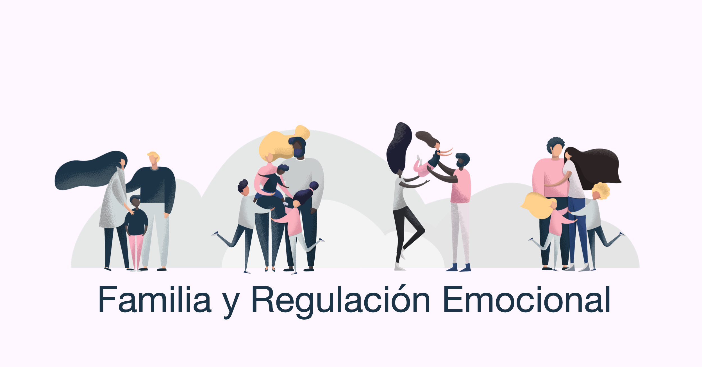

Las relaciones sociales juegan un papel fundamental en nuestro bienestar emocional. Sentirse apoyado y valorado por otros mejora nuestro estado de ánimo y autoestima.Desde tiempos ancestrales, el ser humano ha buscado la interacción con otros individuos, ya sea en el ámbito familiar, amistoso o laboral. Estas relaciones nos permiten desarrollar habilidades sociales, aprender de los demás, establecer vínculos afectivos y formar parte de una comunidad.
Las relaciones sociales ofrecen una serie de beneficios significativos. Investigaciones han demostrado que aquellos individuos que mantienen una red amplia y diversa de contactos tienden a gozar de una mayor longevidad. Además, estas personas suelen tener una mejor salud tanto física como mental en comparación con aquellos que tienen menos relaciones sociales
En resumen, las relaciones sociales no solo enriquecen nuestras vidas, sino que también nos brindan numerosos beneficios. Desde una mayor esperanza de vida hasta una mejor salud en general, contar con una red sólida de conexiones puede marcar una gran diferencia en nuestra calidad de vida. Además, el apoyo social nos ayuda a afrontar los desafíos de manera más efectiva, proporcionándonos un soporte emocional y psicológico que nos impulsa a seguir adelante en momentos difíciles.
